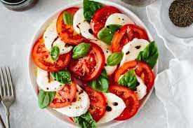
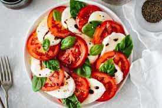
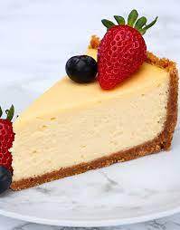
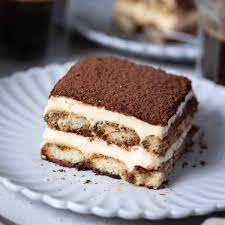

Fresh tomatoes, mozzarella, and basil drizzled with balsamic glaze.
Button mushrooms filled with a savory blend of cheeses and herbs, baked to perfection.
Grilled bread topped with a mixture of tomatoes, garlic, basil, and olive oil.

Fresh tomatoes, mozzarella, and basil drizzled with balsamic glaze.
Button mushrooms filled with a savory blend of cheeses and herbs, baked to perfection.
Grilled bread topped with a mixture of tomatoes, garlic, basil, and olive oil.
Salmon fillet seasoned and grilled to perfection, served with lemon butter sauce.
Grilled chicken breast served over fettuccine pasta with creamy Alfredo sauce.
Mixed vegetables sautéed with soy sauce and served over steamed rice.
Assorted fruits and marshmallows served with rich chocolate fondue.
Classic New York-style cheesecake with a graham cracker crust.
Layered Italian dessert with coffee-soaked ladyfingers and mascarpone cheese.
